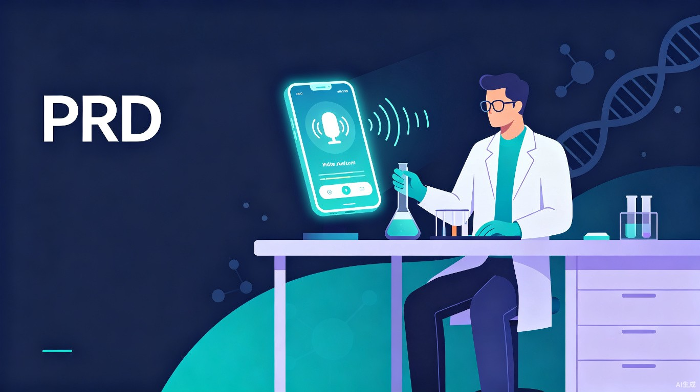

Your Co-scientist
An AI Copilot for Lab Scientists. Focus on discovery. We'll remember the details.
01产品概述
一句话定位
基于语音交互的实验室AI协作伙伴，以审稿人视角贯穿实验全流程，让科学家专注于发现本身。
产品愿景
实验室工作者的双手永远不应该被"查Protocol"和"算稀释比例"占用。Your Co-scientist 不是另一个实验记录App，也不是通用AI聊天机器人。它是一个真正理解你正在做什么实验、处于哪一步、接下来可能会犯什么错的AI实验搭档。
人很难发现自己的逻辑漏洞。AI真正扮演的角色是 Reviewer（审稿人）——不是回答你问的问题，而是在你没想到要问的时候，主动告诉你。
核心价值
语音优先交互
双手戴着手套也能用的实验助手，像跟同事打电话一样自然
审稿人式Review
不是被动回答问题，而是主动发现你的实验设计漏洞
上下文感知
知道你现在在哪一步，自动推进、自动提醒、自动计时
02设计理念
以下三个设计原则不是凭空想象的，它们来自真实的实验室日常。
语音优先，而非触控优先
实验室的核心场景是双手被占用。你可能戴着手套、拿着移液枪、扶着培养皿——这时候去掏手机、解锁屏幕、点按钮是不现实的。纸质Protocol翻起来麻烦、容易打湿、在超净台前根本没法翻页。手机人人都有，但交互方式必须是语音对话，像跟一个靠谱的同事打电话——AI开口告诉你该做什么，你说一声"好了"它就知道你做完了，自动进入下一步。
AI是审稿人，不是答题机器
做实验最难的不是操作本身，而是你没意识到的错误。比如Western Blot忘了设内参对照、抗体孵育时间混淆了不同一抗的推荐时长、细胞传代次数太多已经老化了还在用。这些问题你不会去"问"AI，因为你根本没想到要问。Your Co-scientist 的Reviewer能力贯穿Workflow的每个环节——在生成Protocol时就帮你审查设计逻辑，在执行到某一步时主动提醒常见易错点。AI的定位是主动的审稿人，不是被动的客服。
上下文感知，而非被动响应
你的AI助手不应该等你来问"下一步做什么"。当你创建了一个"三天实验规划"后，AI应该知道今天是第几天、你在做哪个实验、当前是Protocol的第几步、这一步需要等待多久。AI主动推进——计时结束自动语音提醒你、根据进度告诉你下一步要准备什么、在关键节点主动提出Review问题。你需要做的只是回应，不需要操作。
03用户画像与核心场景
目标用户
实验室研究生 / 技术员
日常：每天在实验室操作4-8小时，重复性实验占比高（WB、PCR、细胞培养、免疫荧光等），需要严格按照Protocol执行。
痛点：戴手套无法操作手机；Protocol纸容易打湿或污染；忘记抗体稀释比例需要重新查文献；实验步骤之间的等待时间容易错过；新Protocol第一次做时容易犯低级错误。
期望："我只管做实验，有人帮我记着时间和步骤，在我可能犯错之前提醒我。"
核心场景
🪰️ 双手被占用
戴乳胶手套操作移液枪时，手机放在一旁，完全无法触控屏幕。语音是唯一可行的输入方式。
📅 多天实验规划
一个完整实验常跨越2-5天（如转染→孵育→收样→WB），需要跨天记忆和进度追踪。
⏱ 等待间隙焦虑
抗体孵育1小时、电泳45分钟——期间做其他实验，容易忘记回来，或不确定时间是否够了。
📖 第一次做新Protocol
读导师给的英文Protocol，不确定某些步骤的细节，容易遗漏关键对照或搞错试剂顺序。
04核心用户旅程
以下是一个典型的三日Western Blot实验完整旅程，展示AI如何在每个环节以Reviewer身份介入：
创建实验规划
进入实验室前，用户打开App，填写本周/三天的实验规划（实验名称、 Protocol来源、样本信息等）。
AI生成Protocol + Critical Review
AI根据实验规划生成结构化Protocol。同时以审稿人视角进行Critical Review：检查是否缺少对照组、抗体稀释比例是否合理、孵育时间是否符合文献推荐、是否有潜在的时间冲突。将Review结果以语音+文字方式呈现。
语音引导执行
进入实验室，AI语音播报当前步骤："现在请准备RIPA裂解液，冰上操作。"用户完成操作后语音回应"好了"或"做完了"，AI自动推进到下一步。全程不需要触碰手机。
Smart Timer 自动计时
当步骤涉及等待（如4度孵育过夜），AI自动启动计时器。计时结束前5分钟语音提醒，并告知下一步需要准备什么。用户可以同时进行其他实验，不会错过时间节点。
AI Calculator 即时计算
需要配制抗体稀释液时，用户语音输入比例和总体积，AI自动计算各成分体积并语音播报结果。也可以用于稀释Buffer、配制凝胶等常见计算场景。
个性化易错提醒
在关键步骤，AI主动提出常见易错点（如"注意：ECL发光液需现配现用，请在暗室操作"）。用户可以在任何步骤添加个人易错备注（"我总是忘记加蛋白酶抑制剂"），AI会在对应步骤主动提醒。
实验完成与记录
实验结束后，AI生成实验执行摘要（实际耗时、步骤完成情况、任何异常记录）。用户可选择保存为实验记录，沉淀个人实验数据。
flowchart TD
A["📁 创建实验规划\n填写实验信息"] --> B["🤖 AI生成Protocol\n+ Critical Review"]
B --> C{"Review结果"}
C -->|需要修改| A
C -->|通过| D["🎤 语音引导执行\nAI播报 → 用户回应 → AI推进"]
D --> E{"涉及等待？"}
E -->|是| F["🕐 Smart Timer\n自动计时 + 到时提醒"]
E -->|否| G{"需要计算？"}
F --> D
G -->|是| H["🤓 AI Calculator\n语音输入 → 自动计算"]
H --> D
G -->|否| I["⚠ 易错提醒\nAI主动提醒 + 用户个人备注"]
I --> D
D -->|全部完成| J["📝 实验摘要\n生成记录并保存"]
05功能模块设计
AI Adaptive Workflow（核心功能）
产品的灵魂。用户输入实验规划后，AI生成结构化的Protocol步骤流，并以审稿人视角进行Critical Review。Workflow不是静态的清单，而是会根据用户实时进度动态调整的智能流。
输入
- 实验名称和类型（如 Western Blot、细胞转染、RT-qPCR）
- Protocol来源（文献链接 / 上传PDF / 手动输入 / 从模板库选择）
- 实验时间范围（今日 / 三天 / 一周）
- 样本信息和特殊条件
AI处理
- Protocol结构化解析：将非结构化的Protocol文本拆解为有序步骤列表，识别每步的操作内容、所需试剂、预计耗时、关键注意事项
- Critical Review（审稿人审查）：检查逻辑完整性——是否缺少对照组、试剂添加顺序是否正确、时间安排是否合理、是否有文献不支持的操作
- 跨天依赖识别：自动识别多天实验之间的依赖关系（如"转染后48h收样"），生成跨天时间线
Critical Review 输出示例
Voice Interaction System（语音交互系统）
产品的交互核心。不是"语音助手+触控界面"的混合模式，而是以语音为第一交互通道，屏幕作为辅助信息显示（进度条、计时器、计算结果）。交互模型类似于打电话——AI说完，你回应，AI接着说。
交互模型
唤醒与控制
- 实验进行中：AI主动播报，无需唤醒词。用户只需自然语言回应即可（"好了"、"做完了"、"下一步"、"等一下"等）
- 中断处理：用户可以说"暂停一下"，AI暂停当前步骤；说"继续"恢复
- 紧急提问：任何时候用户都可以提问，如"这个抗体稀释比例是多少？"AI即时回答
- 屏幕辅助：屏幕始终显示当前步骤、进度条、剩余时间等可视化信息，方便用户在手套脱下时快速浏览
Smart Timer（智能计时器）
实验中充斥着各种等待时间：抗体孵育、酶切反应、离心、电泳……Smart Timer不只是倒计时，它理解每个等待步骤在整体实验中的位置，并能主动提醒下一步准备工作。
核心能力
- 自动计时：Workflow进入涉及等待的步骤时，自动启动倒计时，无需手动设置
- 到期提醒：倒计时结束前5分钟和结束时刻，语音提醒用户
- 下一步预播：到期提醒时，同时播报下一步需要准备的内容（"裂解时间到。下一步需要准备BCA蛋白定量试剂盒和96孔板，请提前从4度冰箱取出"）
- 多任务并行：支持同时运行多个计时器（一边跑胶一边抗体孵育是实验室常态）
- 进度可视化：屏幕上显示当前实验的整体进度条、当天已完成的步骤数、预计完成时间
AI Calculator（实验计算器）
解决实验中最常见的数学问题：抗体稀释、Buffer配制、凝胶配方等。语音输入参数，AI即时计算并播报结果。
使用场景
支持的计算类型
- 抗体/试剂稀释比例计算
- Buffer配制（各成分浓度→体积）
- 细胞传代计算（密度、分裂比、所需培养皿数量）
- DNA/RNA浓度换算
Personal Error Library（个性化易错库）
AI内置了常见实验的易错知识库，同时支持用户添加个人化的备注和习惯。这是Reviewer能力的个性化延伸。
双层提醒机制
| 维度 | 内容来源 | 示例 |
|---|---|---|
| 通用易错库 | AI内置 + 文献知识 | "ECL发光液需现配现用，避光保存""Loading Buffer需95度煮5分钟，否则蛋白条带会弯曲" |
| 个人备注 | 用户自定义添加 | "我总是忘记加PMSF""这个细胞系传代不要超过第15代""4号冰箱的移液枪不准，用2号的" |
交互方式
- 用户在任何步骤中都可以语音添加备注："记住，以后做这一步的时候提醒我加PMSF"
- AI在对应步骤执行时，优先播报个人备注（因为个人备注的优先级高于通用提醒）
- 备注支持编辑和删除，可按实验类型归类
06交互设计要点
语音对话状态机
| 状态 | 触发条件 | AI行为 | 用户操作 |
|---|---|---|---|
| 播报中 | Workflow进入新步骤 / 计时结束 | 语音播报当前步骤内容 + 注意事项 | 聆听（无需操作） |
| 等待确认 | 播报完毕 / AI提出Review问题 | 静默等待用户回应，超时后重播一次 | 语音回应（"好了"/"知道了"/回答问题） |
| 执行中 | 用户确认"好了" | 启动计时（如需）/ 播报下一步预准备信息 | 执行实验操作 |
| 暂停 | 用户说"暂停一下" | 暂停当前步骤计时，等待用户指令 | "继续"恢复 |
| 自由问答 | 用户在任意状态下提问 | 回答问题后回到当前步骤状态 | 提问 |
屏幕辅助信息架构
屏幕不是主要交互界面，而是信息仪表盘——在用户不方便听语音时（如讨论区附近太吵）可以快速扫一眼获取关键信息：
当前步骤卡片
大字体显示当前步骤名称、操作要点、进度指示
全局进度条
显示当天实验的整体完成度（如 3/8 步）
计时器面板
显示所有活跃计时器的倒计时和关联步骤
计算结果区
最近一次AI Calculator的计算结果，方便确认数值
07竞品对比与差异化
纸质Protocol / PDF
易打湿、难翻页、无主动提醒、无法动态调整步骤
Benchling / Hivebench
侧重实验记录和库存管理，无语音交互，无实时引导
ChatGPT / 语音助手
能回答问题，但不知道你在做什么实验、无法主动推进步骤
Your Co-scientist
语音优先 + 上下文感知 + Reviewer角色 + 自动推进Workflow
核心差异化
1. 交互方式不同：不是"你问它答"，而是"它说你做"。语音是唯一主交互通道，不是触控的附属功能。
2. AI角色不同：不是搜索引擎或计算器，而是有实验领域知识的审稿人。它会在你没想到要问的时候主动提出问题。
3. 上下文深度不同：通用AI助手每次对话都是独立的，而Your Co-scientist持续追踪你的实验状态——知道你在第几步、等了多久、下一步要准备什么。
4. 个性化不同：会学习你的实验习惯和易错点，越用越懂你。
08未来展望
Phase 1: MVP
核心Workflow + 语音交互 + Smart Timer + AI Calculator，覆盖最常见的5-10个实验模板
Phase 2: 智能化
Personal Error Library 学习用户习惯、Protocol模板社区共享、实验数据自动分析（如条带灰度分析）
Phase 3: 协作
课题组内Protocol共享与Review、实验室设备IoT联动（自动读取离心机剩余时间）、与ELN系统集成
Your Co-scientist — Focus on discovery. We'll remember the details.